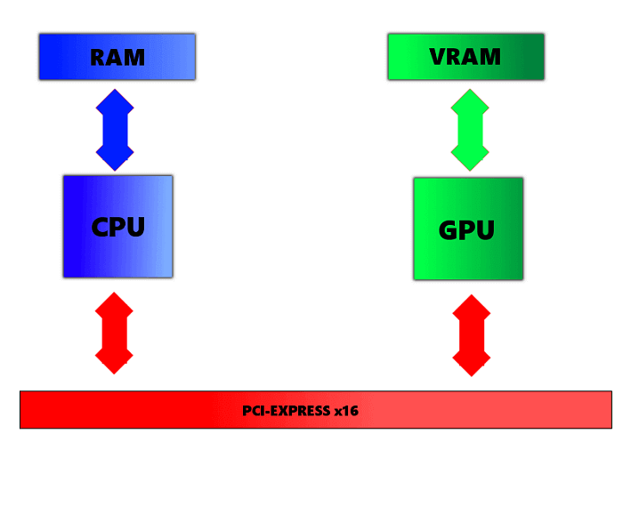
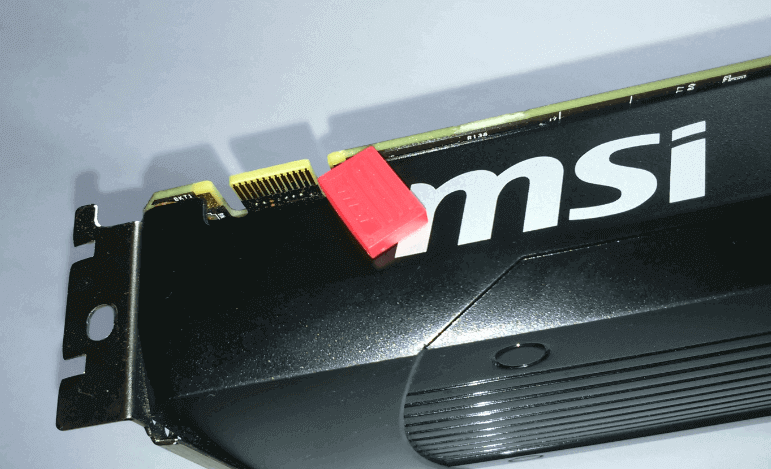

Składamy komputer. Stosowane technologie i parametry kart graficznych.
Z cyklu poradnika o składaniu komputera, omówimy parametry karty graficznej, przybliżymy różnicę między RAM a VRAM, omówimy technologie SLI/Crossfire.
Aby powrócić kliknij baner.
Najważniejsze parametry karty graficznej:
- Ilość jednostek shaderów (w dużym skrócie- służą do generowania odpowiednich kolorów dla każdego piksela na ekranie, biorąc pod uwagę również oświetlenie oraz cieniowanie);
- Ilość jednostek ROP (są to jednostki renderujące, tj. przekształcające wygenerowane dane 3D do postaci 2D, czyli takiej, którą jest w stanie wyświetlić monitor);
- Ilosć jednostek TMU (jednostki zajmujące się operacjami związanymi z teksturowaniem modeli);
- Taktowanie rdzenia GPU;
- Taktowanie pamięci;
- Typ zastosowanej pamięci;
- Ilość pamięci;
- Szerokość szyny danych;
- Ilość tranzystorów;
- Proces technologiczny;
- Oraz oczywiście sama architektura karty.
RAM a VRAM
Jednym z pytań, które można dość często usłyszeć jest: Mój komputer używa pamięci RAM DDR3, czy mogę zainstalować kartę, której pamięć to GDDR5?
Odpowiedź brzmi: Oczywiście! Pamięć karty graficznej a pamięć systemowa są od siebie absolutnie niezależne.
Procesor CPU współpracuje bezpośrednio z pamięcią RAM, natomiast procesor GPU jedynie z pamięcią GDDR.

Dlaczego nie można tego zunifikować? Czemu karta graficzna nie może korzystać z pamięci RAM, a musi posiadać osobną pamięć? Generalnie korelacja nazw w tym przypadku może być dość myląca, bo pomimo, że i RAM i VRAM są pamięciami, to pamięć systemowa RAM przystosowana jest do częstych odczytów niewielkich porcji danych, odwrotnie do VRAM, gdzie przechowywane są gigantyczne wręcz zasoby takie jak tekstury w wysokich rozdzielczościach i niezbędna jest do tego szersza szyna danych. Wymusza to na obu pamięciach zupełnie inną konstrukcję, więc pamięć DDR nie byłaby tak wydajna na miejscu GDDR i odwrotnie. W przypadku pamięci GDDR w kartach graficznych oprócz jej typu (GDDR3 vs DDR5 vs HBM itd) jest również szyna danych, która jest swego rodzaju autostradą dla informacji. Od jej szerokości w dużym stopni zależy przepustowość informacji z/do pamięci karty.
SLI/Crossfire
SLI i Crossfire są technologiami odpowiednio Nvidii i AMD do łączenia ich kart ze sobą w celu poprawienia wydajności. Aby to osiągnąć potrzebujemy posiadać płytę główną z odpowiednią liczbą slotów PCI-Express x16 oraz mostka specjalnie stworzonego do tego celu, nie zapominając oczywiście o odpowiedniej mocy zasilaczu, który będzie w stanie zaopatrzyć je w wystarczającą ilość prądu. Jakie są plusy takiego rozwiązania? Oczywiście więcej kart = lepsza wydajność, choć nie skaluje się ona w stopniu jeden do jednego (przykładowo osiągając 50 FPS w danej grze po dołożeniu drugiej karty nie będziemy wykręcać 100 FPS itd.), a nie wszystkie gry wspierają tego typu rozwiązania, to jest ono często wykorzystywane przez entuzjastów, którym zaczyna powoli brakować wydajności, szczególnie w rozdzielczości 4K. Ze względu na nieskalowalność wydajności nie opłaca się łączyć wielu słabych kart ze sobą. Lepszym rozwiązaniem jest zainwestowanie w jeden, mocniejszy układ, który nie dość, ze zapewni lepszą wydajność to dodatkowo mamy pewność, że nie doświadczymy problemów z brakiem wspierania SLI/CF przez daną grę.

Jeżeli chodzi o różnice między tymi technologiami: SLI od Nvidii wymaga dwóch kart graficznych o tym samym układzie, z taką samą ilością pamięci na pokładzie do poprawnego działania. Crossfire dla kart AMD natomiast nie posiada tego ograniczenia. Dodatkowo nowe Radeony nie wymagają mostka aby połączyć je w CF.